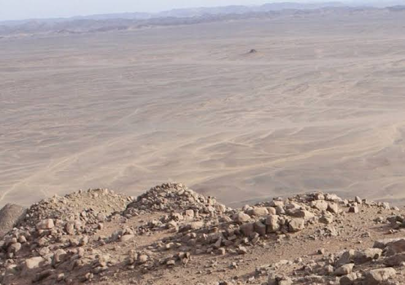

Bir Tawil
Area: 2,060 sq km (800 sq mi)
Population: 0
Bir Tawil (Egyptian Arabic: بير طويل,) is a 2,060 sq km (795.4 sq mi) area of land along the border between Egypt and Sudan which is claimed by neither country. Together with the neighbouring Halaib Triangle, it is sometimes called the Bir Tawil Triangle (Bartazoja Triangle), despite its quadrilateral shape; the two regions border at a quadripoint.Its unclaimed status results from a discrepancy between the straight political boundary between Egypt and Sudan established in 1899 and the irregular administrative boundary established in 1902. Egypt asserts the political boundary, and Sudan asserts the administrative boundary, with the result that the Halaib Triangle is claimed by both and Bir Tawil by neither. As of 2024, Bir Tawil remains the only place that is habitable but not claimed by any recognised government.
History
On 19 January 1899, an agreement between the United Kingdom and Egypt relating to the administration of Sudan defined "Soudan" as the "territories south of the 22nd parallel of latitude". It contained a provision that would give Egypt control of the Red Sea port of Suakin, but an amendment on 10 July 1899 gave Suakin to Sudan instead.
On 4 November 1902, the UK drew a separate "administrative boundary", intended to reflect the actual use of the land by the tribes in the region. Bir Tawil was grazing land used by the Ababda tribe based near Aswan, and thus was placed under Egyptian administration from Cairo. Similarly, the Hala'ib Triangle to the northeast was placed under the British governor of Sudan, because its inhabitants were culturally closer to Khartoum.
Egypt claims the original border from 1899, the 22nd parallel, which would place the Hala'ib Triangle within Egypt and the Bir Tawil area within Sudan. Sudan, however, claims the administrative border of 1902, which would put Hala'ib within Sudan, and Bir Tawil within Egypt. As a result, both states claim Hala'ib and neither claims the much less valuable Bir Tawil area, which is only a tenth the size, and has no permanent settlements or access to the sea. There is no basis in international law for either Sudan or Egypt to claim both territories, and neither nation is willing to cede Hala'ib. With no recognised third state claiming the neglected area, Bir Tawil is one of the few land areas of the world not claimed by any recognised state.
Geography
Bir Tawil is 2,060 km (795.4 sq mi) in size. The lengths of its northern and southern borders are 95 kilometres (59 mi) and 46 kilometres (29 mi) respectively; the lengths of its eastern and western borders are 26 kilometres (16 mi) and 49 kilometres (30 mi) respectively. In the north of the area is the mountain Jabal Tawil (جبل طويل), with a height of 459 metres (1,506 ft). In the east is Gabal Hagar El Zarqa, with a height of 662 metres (2,172 ft), marking the territory's highest point. In the south is the Wadi Ṭawil (وادي طويل), also called Khawr Abū Bard. There is no surface water in Bir Tawil.
Climate
Bir Tawil's climate is, according to the Köppen climate classification, a hot desert climate (Bwh). For approximately three-quarters of the year the temperature can exceed 40 °C (104 °F), and in the three hottest months (June–August) it can be as high as 45 °C (113 °F). During the winters (December and January being its mildest months), Bir Tawil can have lower temperatures, with 26 °C (79 °F) as its usual temperature peak.
Because the territory is far from the ocean (being at least 200 km or 120 mi away from the Red Sea), the diurnal temperature range throughout the region is large, about 20 °C (36 °F) year-round.
Population
Bir Tawil has no settled population, but members of the Ababda and Bishari tribes pass through the region, and unregulated mining camps have been established throughout the territory in search of gold deposits. Young Pioneer Tours operated two tours to the territory in 2019 and 2024, and claimed the existence of permanent settlements related to the unregulated mining camps. They also reported that mercenaries and weapons dealers linked to the ongoing civil war in Sudan were operating in the area.
The local population has reacted unfavourably to attempts to claim their lands over the internet. While they mostly welcomed rare visitors, they are also armed well enough to repel foreign occupiers.
Claims
Due to its status as de jure unclaimed territory, a number of individuals and organisations have attempted to claim Bir Tawil as a micronation; because of the remoteness and hostile climate of the region, the vast majority of these claims have been by declarations posted on the internet from other locations. None of these claims, or any others, have been recognised, officially or otherwise, by any government or international organisation.
Literature
Dean Karalekas (2020). The Men in No Man's Land: A Journey Into Bir Tawil. 120 pages. ISBN 979-8666413401.